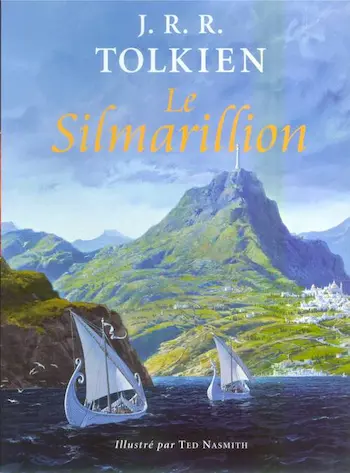

Le Silmarillion de J.R.R. Tolkien
Je me suis attaquée au monument Le Silmarillion de J.R.R. Tolkien. J’ai lu la version illustrée par Ted Nasmith aux éditions Christian Bourgeois. Il s’agit en vérité d’une compilation de plusieurs récits concernant la conception du monde, la venue des Elfes et des Hommes et les nombreuses batailles contre le Mal.
Résumé global
Dans la première partie du livre, il est question d’Ilúvatar et de la façon dont il crée le monde. Certains Ainur sont envoyés sur Eä (ou Arda), la Terre, pour préparer le monde à la venue des Enfants d’Ilúvatar. Ils deviennent les Valar.
Les Elfes n’apparaîtront sur ces terres que bien plus tard, alors que les Valar auront eu le temps de se fonder une cité, de créer la Lumière et de voir l’un des leurs, Melkor, se retourner contre eux et pervertir tout ce qu’ils créent.
La seconde partie du livre traite à proprement parler des Silmarils, de magnifiques joyaux créés par Fëanor sur les Terres Immortelles. Il y a enfermé la lumière des Arbres d’or et d’argent avant que Melkor ne les ait détruits. Melkor lui vole ses joyaux et s’enfuit en Terre du Milieu. Fëanor décide alors de quitter Valinor, contre l’avis des Valar. Il se rebelle et maudit son nom et sa famille par un serment insensé. Les guerres entre elfes et contre les serviteurs de Morgorth, comme Melkor a été rebaptisé, débutent.
De nombreux récits sont relatés, concernant les exploits de beaucoup de personnages et le destin des fils de Fëanor liés à leur serment. Tous ces événements amènent Idril (une Elfe) et Tuor (un Homme) à se rencontrer. Ils se marient et ont un fils Eärendil, qui se marie lui-même avec une Elfe, Elwing. Ils ont deux fils Semi-Elfes, Elrond et Elros. Eärendil part demander grâce aux Valar pour qu’ils les aident à détruire Morgoth. Une grande guerre s’ensuit, le monde est dévasté et change.
Morgoth étant vaincu, les Valar offrent aux Hommes de vivre sur une île dans les mers de l’Ouest, mais ils ne peuvent rejoindre les Terres Immortelles comme les Elfes. Ce sont les Dúnedain, les Hommes de Númenor.
Au fil des siècles, ils deviennent jaloux des Elfes et de leur immortalité. Poussés par Sauron, le lieutenant de Morgoth, ils enfreignent les interdits et déclenchent la colère des Valar. L’île de Númenor est engloutie et seuls quelques Númenoréens survivent, parmi lesquels Elendil et ses fils, Isildur et Anarion. Ils retournent sur les Terres du Milieu et fondent leurs cités pour se protéger de Sauron.
Celui-ci a été affaibli à Númenor, et le temps qu’il regagne ses forces, il forge des Anneaux de pouvoirs qu’il distribue aux peuples de la Terre du Milieu pour les dominer grâce à un Anneau Unique qu’il a forgé dans la Montagne du Destin. Son ombre grandit. Des Istari sont envoyés de Valinor pour guider les peuples de la Terre du Milieu dans leur combat face à Sauron. Parmi eux, Mithrandir, le Pèlerin gris. C’est lui qui conduira le dernier descendant de la lignée d’Elendil, Aragorn, au trône du Gondor, Frodo le Hobbit à porter l’Anneau Unique dans les flammes du Mordor et ainsi, à la fin du Troisième Âge.
Mon avis
J’avais très envie de découvrir cet ouvrage parce que j’adore Le Seigneur des Anneaux et le Hobbit. Je voulais connaître les origines de la Terre du Milieu et l’histoire des personnages que je connaissais déjà.
Ce livre a effectivement répondu à mes attentes. Je le trouve pourtant bien compliqué à lire. Il y a énormément de personnages et de destins qui se recoupent. Chaque personnage ou chaque lieu peut changer de nom en fonction des événements qui se déroulent et les appellations peuvent être données dans différentes langues. Un vrai casse-tête !
Les cartes, le glossaire et les appendices sur les langues sont un plus, mais ce n’est pas aisé de les consulter durant la lecture.
En fin de compte, je suis bien contente de l’avoir lu, mais je n’ai pas retenu grand-chose !
J’ai été assez déçue par l’esprit belliqueux et compétitif de certains Elfes, alors que je pensais que les membres de cette espèce étaient bons par nature. Je n’ai pas été surprise par la dualité et la perfidie des Hommes. Il en est peu de valeureux dans ces récits. La décadence et la chute des Dúnedain m’a quand-même étonnée. Comment croire qu’ils aient pu agir de la sorte, écouter Sauron, se retourner contre les Valar, piller et assujettir les peuples des terres du Milieu, etc ?! Ce n’est pas très étonnant finalement que les Hommes du Sud combattent aux côtés de Sauron dans la Guerre des Anneaux. Ce qui l’est, en revanche, c’est qu’ils descendent tous de Numénoréens, comme Aragorn !
Conclusion
J’en sais un peu plus sur l’univers de Tolkien et le soin qu’il a apporté à l’Histoire de son monde. Cela me fait plaisir, mais je ne crois pas que j’irai jusqu’à relire Le Silmarillion un jour.